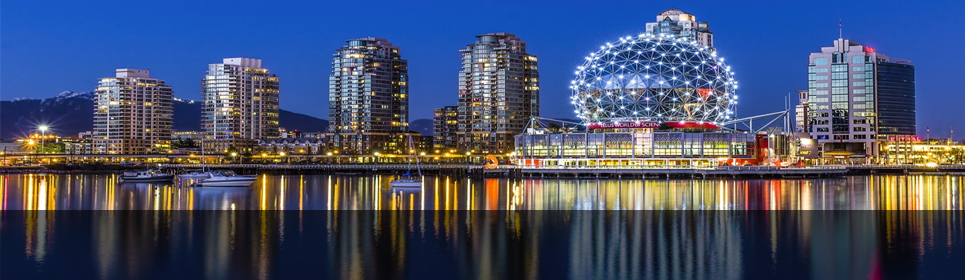

- 
-
Vancouver - Toca do Felix.
-
Vancouver - Ponte, visão a Noite.
-
Linda vista de Vancouver.
Historia
Onde hoje é situada à Cidade de Vancouver,muitos ano atrás era habitada por povos chamados Aborígenes.
Com á chegada de navios , 1677 e 1898 , comandado por José Maria Naruaez e George Vancouver, provocaram mudanças da vida dos Aborígenes.
Nos anos sguintes foram criados vários assentamentos. Em 1863 foi instalado à madeireira Moodyville, que atualmente é a North Vancouver, que serve como uma das fontes em sua econômia.
À Cidade foi incorporada em 6 de abril de 1886.
Informações
Localização
Vancouver é localizada na Península Burrard.
Ela faz parte da zona do Pacífico e na marítima do pacífico.
Econômia
Ela é um dos maiores centros de industriais do Canadá.Tendo como principal fonte de renda o comércio Internacional, possuindo um dos portos mais movimentados do Canadá. Um dos setores com importância, é o turismo , movimentado cerca de 4 bilhões de dólares, juntamennte com ele a a produção cinematográfica produzindo cerca de 10% dos filmes de Hollywood.
Geografia
Vancouver possuí uma àrea de 114,67 Km² cercado por rios. Possui parques e playgorunds,com cerca de 11 Km². Devido à sua localização no litoral as temperaturas não chegam a picos altos,tanto no calor quanto no frio.
Infraestrutura
À Educação em Vancouver conta com escolas de ponta não só privadas, mas também públicas, oferendo toda uma estrutura para que o aluno possa se desenvolver, desde pequeno. Conta com várias disciplinas em seus planos de ensino, tendo como objetivo criar líderes desde crianças.